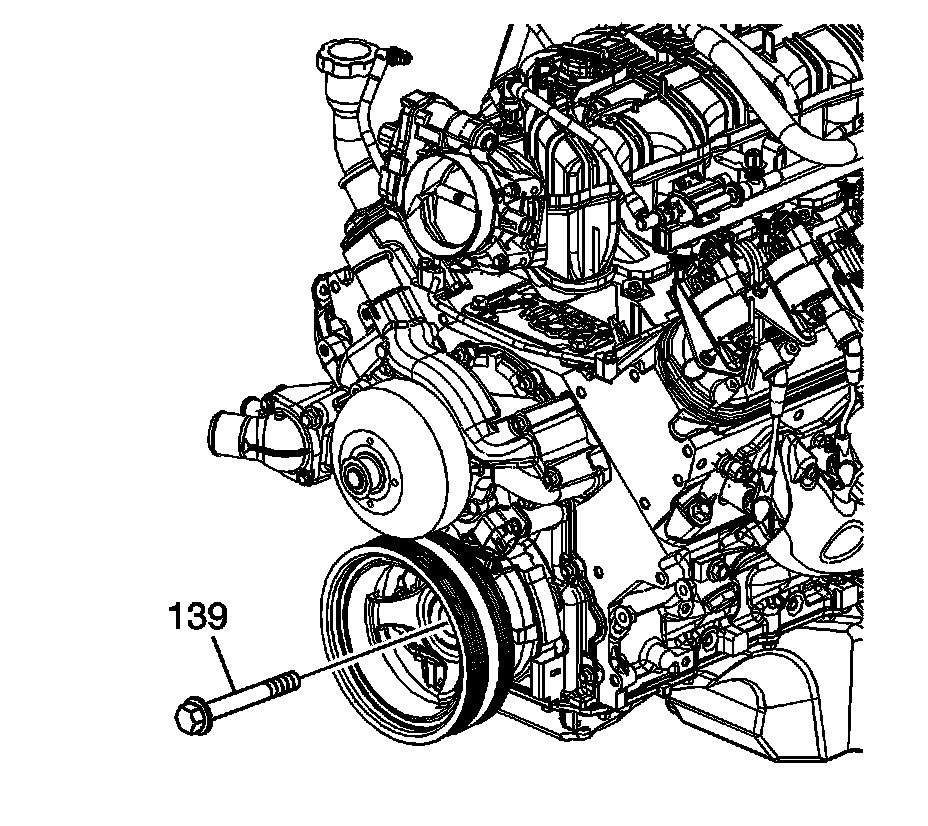
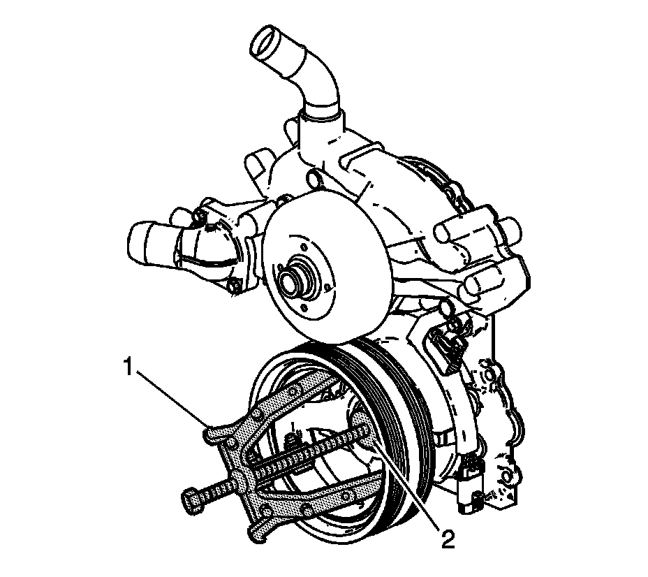
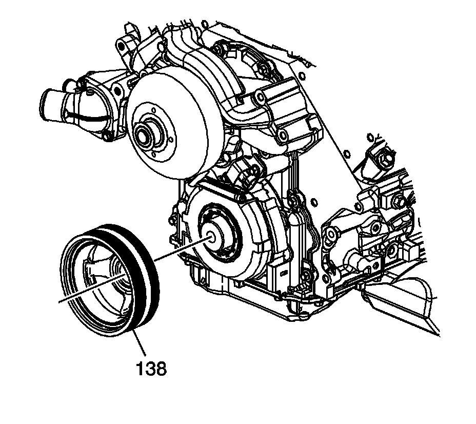
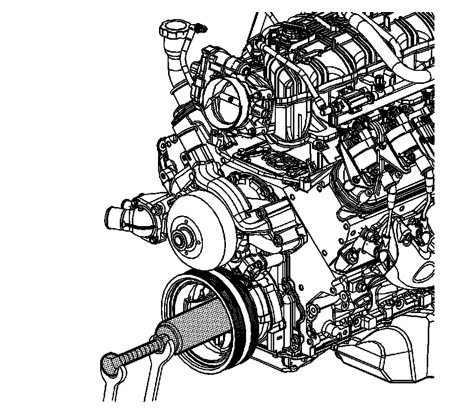
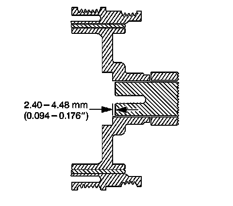

Harmonic Balancer - Crankshaft Pulley: Service and Repair
Crankshaft Balancer Replacement
Tools Required
^ J 41478 Crankshaft Front Oil Seal Installer
^ J 41665 Crankshaft Balancer and Sprocket Installer
^ J 41816-A Crankshaft Balancer Remover
^ J 41816-2 Crankshaft End Protector
^ J 42386-A Flywheel Holding Tool
^ J 45059 Angle Meter
Removal Procedure

1. Remove the air conditioning (A/C) drive belt. Refer to Drive Belt Replacement - Air Conditioning.
2. Remove the cooling fan and shroud.
3. Remove the starter motor.
Notice: Refer to Fastener Notice.
Important: Ensure that the teeth of the J 42386-A mesh with the teeth of the engine flywheel.
4. Install the J 42386-A (1) and bolts. Use one M10-1.5 x 120 mm and one M10-1.5 x 45 mm bolt for proper tool operation.
Tighten the J 42386-A bolts to 50 N.m (37 lb ft).

5. Remove the crankshaft balancer bolt (139). Do not discard the crankshaft balancer bolt at this time. The old balancer bolt will be used during the balancer installation procedure.

6. Install the J 41816 (1) and J 41816-2 (2) to the crankshaft balancer.

Important: The crankshaft balancer is balanced as an individual component. It is not necessary to mark the balancer prior to removal.
7. Use the J 41816 and the J 41816-2 to remove the crankshaft balancer (138).
8. Remove the J 41816 and the J 41816-2 from the crankshaft balancer.
Installation Procedure
Important:
^ The crankshaft balancer installation and bolt tightening involves a four stage tightening process. The first pass ensures that the balancer is installed completely onto the crankshaft. The second, third, and fourth passes tighten the NEW bolt to the proper torque.
^ The used crankshaft balancer bolt will be used ONLY during the first pass of the balancer installation procedure. Install a NEW bolt and tighten as described in the second, third and fourth passes of the balancer bolt tightening procedure.
Important: The balancer should be positioned onto the end of the crankshaft as straight as possible prior to tool installation.
1. Position the crankshaft balancer (138) onto the end of the crankshaft.

2. Install the J 41665 and the threaded rod from the J 41478 to crankshaft balancer and install the balancer.
1. Assemble the threaded rod, nut, washer and installer. Insert the smaller end of the installer into the front of the balancer.
2. Use a wrench and hold the hex end of the threaded rod.
3. Use a second wrench and rotate the installation tool nut clockwise until the balancer is started onto the crankshaft.
4. Remove the tool and reverse the installation tool.
Position the larger end of the installer against the front of the balancer.
5. Use a wrench and hold the hex end of the threaded rod.
6. Use a second wrench and rotate the installation tool nut clockwise until the balancer is installed onto the crankshaft.
7. Remove the J 41665 and the threaded rod.
3. Install the USED crankshaft balancer bolt (139).
Tighten the USED bolt to 330 N.m (240 lb ft).
4. Remove the USED crankshaft balancer bolt.

Important: The nose of the crankshaft should be recessed 2.4-4.48 mm (0.094-0.176 in) into the balancer bore.
5. Measure for a correctly installed balancer. If the balancer is not installed to the proper dimension, install the J 41665 and repeat the installation procedure.
6. Install the NEW crankshaft balancer bolt (139).
1. Tighten the bolt a first pass to 50 N.m (37 lb ft).
2. Tighten the bolt a final pass to 140 degrees using J 45059.
7. Remove the J 42386-A (1) and bolts.
8. Install the starter motor.
9. Install the cooling fan and shroud.
10. Install the A/C drive belt.
11. Perform the crankshaft position (CKP) system variation learn procedure. Refer to Crankshaft Position System Variation Learn.